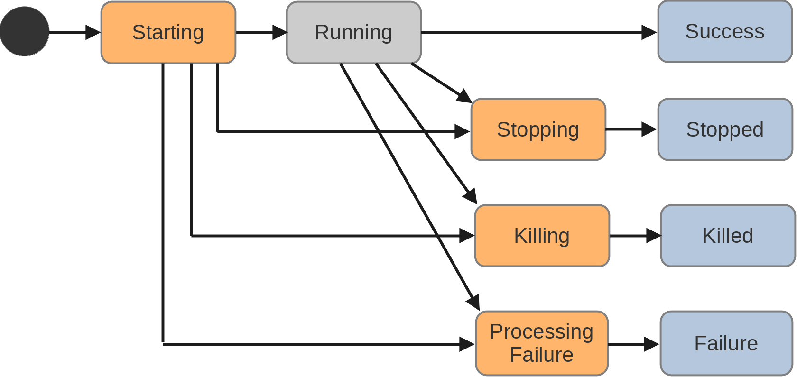

CAMEO
The first goal of CAMEO is to provide services for starting, stopping, synchronizing distributed applications. CAMEO is an application-oriented middleware. The lifecycle of remote applications can be entirely managed either by the CAMEO console or in an application by using the client API in C++, Java or Python.
Once applications are managed by CAMEO, some communication patterns between them can be used: requester/responder, publisher/subscriber, return value at the end of the execution of the application. These patterns are high-level and provide some more synchronization.
An application started by CAMEO can terminate with an exception but the remote caller will be notified with an error, so that he will be able to take the decision to restart or not the application.
Implementation
CAMEO was designed taking into account the disadvantages of CORBA. Unlike CORBA which shares data references through a naming service, CAMEO shares application instances. This is a real different approach. Thus the applications have the responsibility to organize the sharing of their data with provided CAMEO patterns for communication or not.
Internally, a CAMEO server is written in pure Java so that it only requires a compatible virtual machine for running. That makes it very portable and easy to install. Moreover CAMEO application instances are processes started by the server but they can also be started as standalone processes. We take advantage of the continuous Java improvement in its process API to have a unified way to start and monitor processes on different platforms (Linux, Mac OS X, Windows).
To organize the network services, we use the robust and reliable ZeroMQ message queue for which a 100% Java implementation called JeroMQ exists. ZeroMQ is not only an open-source library, it also provides a precise documentation on how to use it in different network contexts. For example we followed the recommendations to implement a real synchronized publisher/subscriber pattern.
The main feature of a CAMEO server is to start and stop applications on the local system. For that, a CAMEO server is configured with a list of applications. Each application has a list of attributes so that an application instance can be seen as an enriched system process. We won’t provide all the available attributes here but we can cite:
- Name: String identifier used by clients to start an application instance.
- Executable: The path to the executable.
- Args: The list of arguments that are always passed to the executable.
- Multiple: yes or no, no meaning that only a single instance of the application can run.
- Restart: An application instance is restarted in case of error termination.
Applications have a workflow state shown in the next figure.

Around the Running state, there are the transitional states Starting, Stopping, Killing, Processing Failure and the terminal states Success, Stopped, Killed, Failure. Once the process of the application is launched, the application has the Starting state. It becomes Running when:
- It remains alive for a certain time, defined as an attribute of the application or,
- The application itself changes its state to Running.
When a client requests the stop of the application, it immediately becomes Stopping until it terminates. At that moment, its state becomes Stopped. Notice that after the crash of an application (segmentation fault in C++ or exception in Java), its state becomes Failure. The state changes are all sent to the clients of the application.
The messages that are passed between applications can be of any type. CAMEO provides binary messages as well as string messages so that the programmer can choose the encoding that can be Protocol Buffers or JSON. Theses messages can be used in the different communication contexts:
- publisher/subscriber
- request/response
- return value
The return value of an application is implemented with a publisher/subscriber so that any connected client application receives the result. We provide a client API for C++, Java and Python.